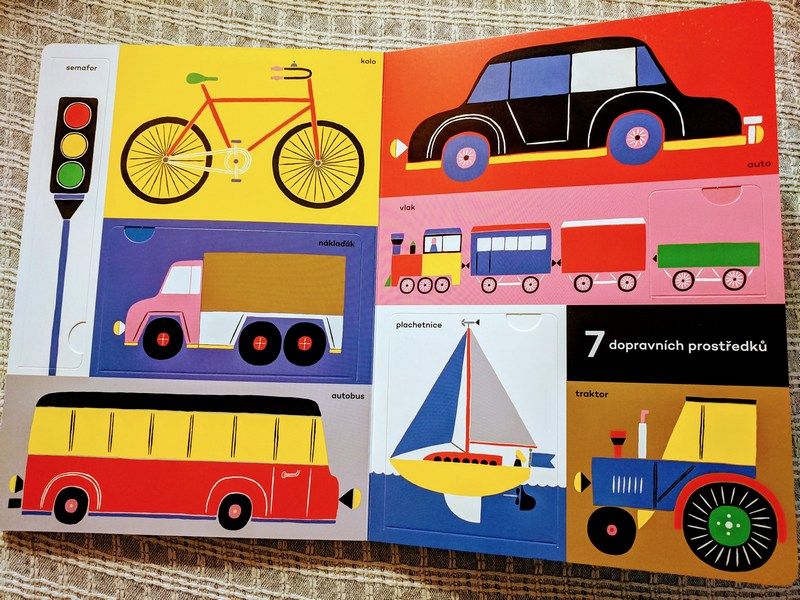
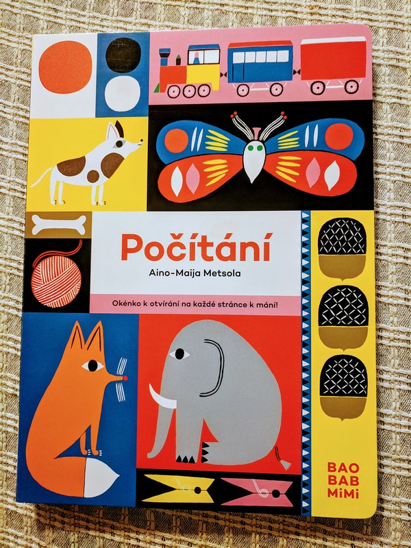

Tato autorka s poněkud krkolomným jménem není v naší domácí knihovničce žádným nováčkem. Její knihu Barvy jsem objevila a koupila Olíkovi k loňským Vánocům. Nejen že si ji opravdu zamiloval, ale určitě to byla i jedna z věcí, která přispěla k tomu, že se během pár týdnů krásně naučil barvy poznávat. Usoudila jsem, že letos nazrál čas na Počítání, protože už u nás začínají být čísla docela v kurzu.
Stejně jako v případě Barev, i tady hrají prim překrásné originální ilustrace a stránky s vyklápěcími okénky. Samozřejmě je to u akčnějších dětí trochu risk a některá okénka u Barev máme už pěkně poslepovaná, to nebudu lhát :-). Ale děti to milují a asi se nedá očekávat, že se občas v zápalu nějaká “nehoda” nestane.
Každá strana/dvoustrana je věnována jednomu číslu. Dítě hledá vždy daný počet obrázků na stejné téma, např. dopravní prostředky, zvířata, kusy oblečení. Krom toho ale nabízí další formu zábavy právě vyklápěcí okénka, pod nimiž najdete doplňující otázky a úkoly. Kniha je doporučena pro děti od jednoho roku, ale myslím, že plně její potenciál využije až dítě o něco starší - určitě až v okamžiku, kdy mu začnou čísla něco říkat, což je u nás teprve teď, ve 2 a 3/4 letech.

Už teď jsem si jistá, že Počítání sklidí u Oliho stejný ohlas jako Barvy a nemůžu se dočkat, až si ji spolu budeme číst. Už aby byl Štědrý den :-)!
